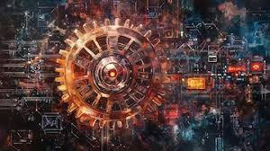

Ada Lovelace: The First Computer Programmer
"That brain of mine is something more than merely mortal; as time will show."
If we use a computer today, we owe thanks to a remarkable woman who imagined the power of machines long before computers existed — Ada Lovelace.
1. Early Life

Ada Lovelace was born on December 10, 1815, in London, England. Her full name was Augusta Ada Byron, daughter of the famous poet Lord Byron and Anne Isabella Milbanke.
Her mother raised her alone and focused on giving Ada a strong education in math and science to avoid her father’s unpredictable path.
Even as a child, Ada showed curiosity for machines. She had private tutors and developed a passion for inventions and logic that would shape her future.
2. Education and Influences
Ada’s education was rare for girls in her time. She studied mathematics and science through private tutors and was mentored by Mary Somerville — a respected female scientist.
Through Mary, Ada met Charles Babbage, a mathematician working on the Analytical Engine — an early version of the computer. This meeting sparked Ada's greatest contributions.
3. Meeting Charles Babbage and the Analytical Engine
At age 17, Ada met Charles Babbage, known as the "father of the computer." He was designing the Analytical Engine — a machine using punched cards to perform calculations.
Unlike others, Ada imagined the machine could go beyond numbers and follow instructions to do complex tasks. Her insight impressed Babbage and began a great collaboration.
4. Translation and Notes on Menabrea’s Paper
In 1842, Ada translated a paper by Italian mathematician Luigi Menabrea about Babbage’s Analytical Engine. Her added notes were longer than the original.
In them, she described a step-by-step method for computing Bernoulli numbers — considered the world’s first computer program, making her the first programmer.
5. Vision of Computing Beyond Numbers

Ada saw that computers could do more than math. She imagined they could compose music, create art, and follow general-purpose instructions — a vision that shaped modern computing.
"The Analytical Engine does not occupy common ground with mere 'calculating machines'... it holds a position wholly its own."
6. Personal Life
In 1835, Ada married William King, who became the Earl of Lovelace. They had three children. Ada balanced family life with her passion for science and mathematics.
Despite societal limitations, she remained committed to learning and thinking deeply until her final years.
7. Later Years and Health Decline
In her mid-thirties, Ada suffered from uterine cancer. The treatments were painful and ineffective, but she continued thinking and learning until her death on November 27, 1852, at just 36.
She was buried beside her father, Lord Byron, as she had wished — a symbolic connection to the parent she never knew.
8. Legacy and Impact
Ada’s notes were rediscovered in the 20th century, and she was finally recognized for her role in computing history.
Today, Ada Lovelace Day celebrates women in STEM. Her name lives on in the Ada programming language and inspires generations of scientists and innovators.
9. Interesting Facts and Quotes
üåü Fascinating Facts:
- Ada Lovelace is considered the first computer programmer in history, even before computers existed.
- In 1980, the U.S. Department of Defense created a programming language called "Ada" in her honor.
- She predicted that computers could do more than math — like composing music and creating images.
- In a time when women were not encouraged to study science, she worked closely with Charles Babbage on the Analytical Engine.
- Her work was forgotten for almost a century until being rediscovered in the 1950s and 60s.
üí¨ Inspiring Quotes:
“That brain of mine is something more than merely mortal, as time will show.”
— Ada Lovelace
“The Analytical Engine does not occupy common ground with mere ‘calculating machines.’ It holds a position wholly its own.”
— Ada Lovelace, 1843
“She has thrown her magical spell over the most abstract of sciences and has grasped it with a force which few masculine intellects could have exerted over it.”
— Charles Babbage